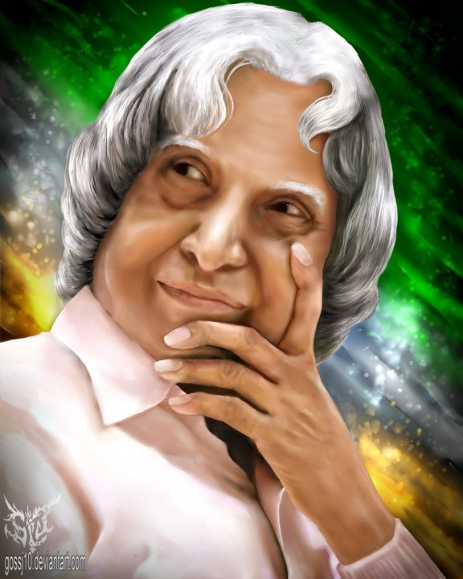

Tribute to APJ Abdul Kalam

QuotesQuotes
"Failure will never overtake me if my determination to succeed is strong enough
Speech
APJ Abdul Kalam’s full name is Avul Pakir Jainulabdeen Abdul Kalam .
He was born in Rameswaram, Tamil Nadu, on October 15th, 1931.
Kalam had been selling newspapers to support the income of his family.
In 1960, he studied aeronautical engineering at the Madras Institute of Technology.
His dream as a child was to become a fighter pilot.
After graduation, he entered the Defense Research and Development Organization (DRDO) as a scientist.
In 1969, he joined the Organization of Indian Space Research (ISRO).
Kalam Sir served as the Polar Satellite Launch Vehicle III Project Director (PSLV III).
His expertise in space science made him known as 'Missile Man of India’.'
He was the 11th President of India. On July 27th, 2015, he took his last breath
Inspirational Speech